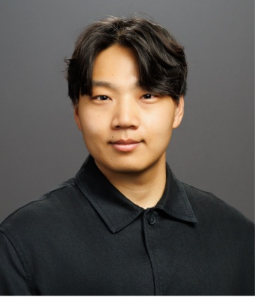

Diffusion in crowded environments
How does the space accessible to a tracer govern its motion?

Ph.D. Student
Mechanical Engineering & Materials Science
Yale University
I study fluid mechanics and soft matter, with a focus on transport in crowded and deformable environments. My work combines experiments and simulations in Prof. Yimin Luo’s group.
How does the space accessible to a tracer govern its motion?
How does a changing particle structure reshape the flow through it?
arXiv:2605.04216 Preprint
Physics of Fluids 37, 022146 Editor's Pick
Presented research on confined diffusion at the 100th ACS Colloids symposium and iPoLS 2026.
New preprint: Model-free estimation in scattering analysis of microscopy.